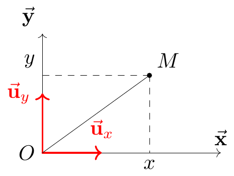
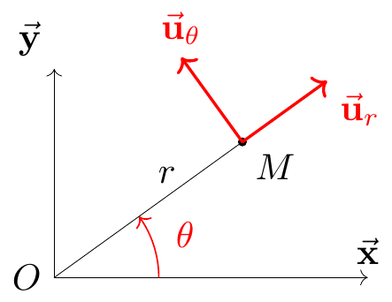
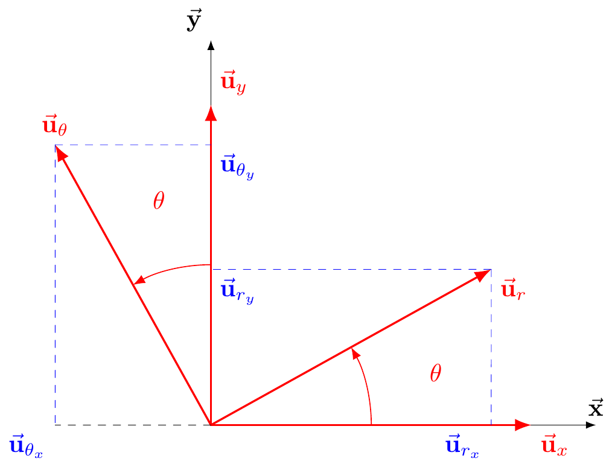
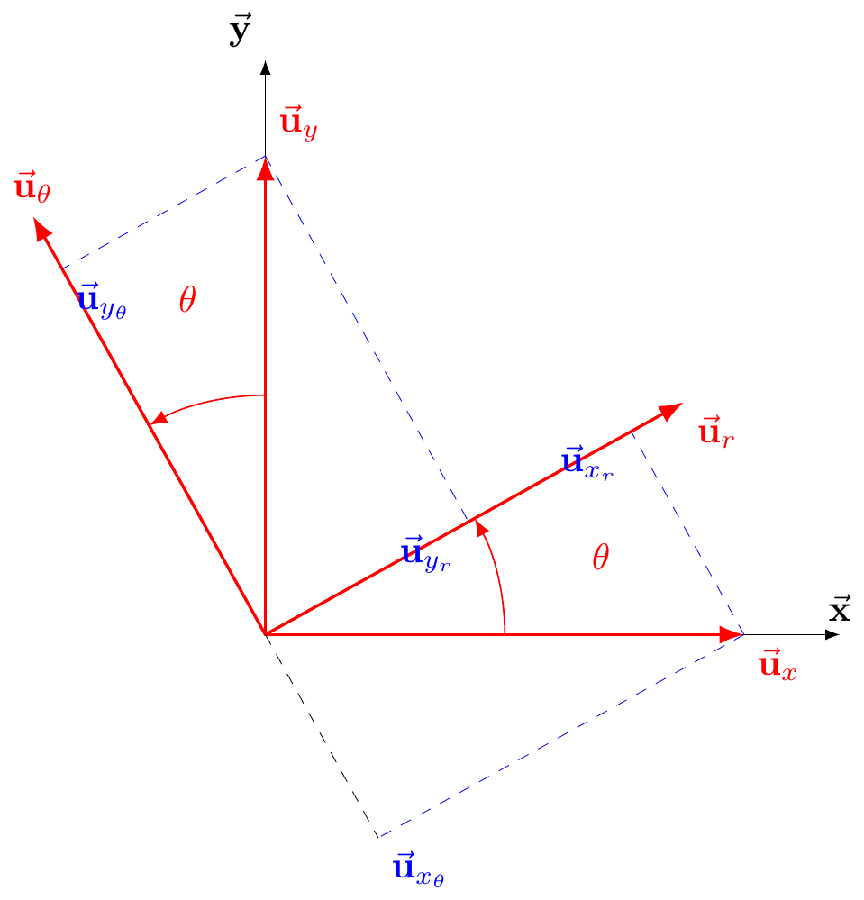
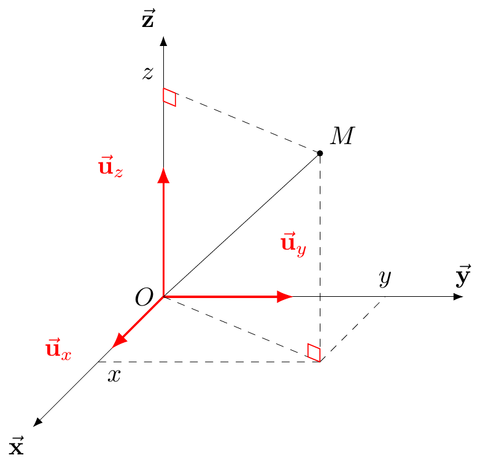
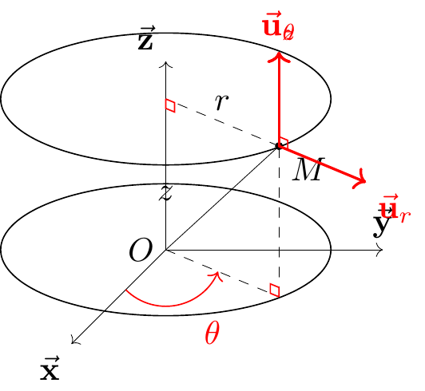

Cinematique de Point
Lecture obligatoire
- Chapitre 1 de ..
Slides avec des idées clés
Qu’est ce que c’est la Cinématique?
La cinématique est une branche de la mécanique qui exprime sous forme mathématique le mouvement des corps. La cinématique du point constitue l’étude du mouvement d’un point indépendamment des causes qui ont engendré ce mouvement.
Point matériel
Il arrive souvent que l’on puisse décrire et prédire le mouvement d’un objet par les lois de la dynamique, en associant l’objet à un unique point géométrique auquel on attribue la masse \(m\) de l’objet. C’est ce qu’on appelle un point matériel.
Ce point matériel constitue un modèle de l’objet étudié. Il s’agit donc d’une approximation permettant une application simple de lois physiques sur cet objet. La modélisation du comportement de l’objet sous la forme d’un point matériel constitue une approximation de son comportement réel.
Rappels sur les vecteurs et les espaces vectoriels
Comparaison des vecteurs
Deux vecteurs non nuls \(\va u\) et \(\va v\) sont colinéaires si et seulement si il existe un nombre réel \(k\) tel que \(\va v = k*\va u\). Autrement dit, deux vecteurs sont colinéaires si l’un est un multiple de l’autre.
Le produit scalaire de deux vecteurs \(\va u\) et \(\va v\) peut être défini comme:
\[ \newcommand\mcy{{\mathcal{y}}} \va u .\va v = \left|\left|\va u\right|\right| \left|\left|\va v\right|\right| \cos{\theta} \]
où \(\theta\) est l’angle formé entre \(\va u\) et \(\va v\)
Deux vecteurs non nuls \(\va u\) et \(\va v\) sont si et seulement si leur produit scalaire est nul : \(\va u .\va v = 0\)
Base d’un espace vectoriel
Soit \(E\) un espace vectoriel.
Une famille de vecteurs \(F\) = (\(\va i_1\), \(\va i_2\), … \(\va i_n\)) de \(E\) est dite libre et ses vecteurs sont dit liénairements indépendants, lorsque
\[\begin{align*} \forall \ \lambda_1,\ \lambda_2,\ ...,\ \lambda_n \in E,\ \lambda_1 \va i_1 + \lambda_2 \va i_2 + ... + \lambda_n \va i_n = \va 0 \implies \lambda_1= \lambda_2= ...=\lambda_n = 0 \end{align*}\]Une famille qui n’est pas libre est dite liée.
Une famille de vecteurs \(F\) = (\(\va i_1\), \(\va i_2\), … \(\va i_n\)) de \(E\) est dite génératrice lorsque tout vecteur \(\va v \in E\) est combinaison des vecteurs de \(F\).
Une famille de vecteurs \(F\) = (\(\va i_1\), \(\va i_2\), … \(\va i_n\)) de \(E\) est dite base de \(E\) lorsque qu’elle est libre et génératrice.
Repère
Soit \(E\) un espace vectoriel de dimension \(n\), \(A\) un espace affine sur \(E\). Soit (\(\va i_1\), \(\va i_2\), … \(\va i_n\)) une base de \(E\) et \(M\) un point de l’espace affine \(A\). Alors l’ensemble (\(A\), \(\va i_1\), \(\va i_2\), … \(\va i_n\)) constitue un repère de \(E\).
Repère orthonormé direct en dimension 2 et 3
Dans ce chapitre et les suivants, on s’interessera uniquement à des espaces de dimension 2 (problème plan) et de dimension 3 (problème en 3D). Dans ce contexte, les différents repères utilisés seront toujours des repères orthonormés directs.
Un repère (\(A\), \(\va i_1\), … \(\va i_n\)) est dit orthonormé si tout les vecteurs (\(\va i_1\), … \(\va i_n\)) composant ce repère sont des vecteurs unitaires, c’est-à-dire qu’ils sont de norme 1 :
\[\begin{align*} \left|\left|\va i_1\right|\right|= ... =\left|\left|\va i_n\right|\right|= 1 \end{align*}\]Un repère (\(A\), \(\va i_1\), … \(\va i_n\)) de dimension 2 ou 3 est dit direct si il respecte la règle dite du “bonhomme d’Ampère” ou de la “main droite”. Dans le cas contraire, le repère est dit indirect.
Repérage d’un point matériel
Référentiel
Pour commence à discuter du mouvement d’un corps ou d’un point, il est nécessaire de définir par rapport à quoi le mouvement sera mesuré.
Un référentiel est un solide servant de référence pour décrire le mouvement des objets. Les vitesses et accélérations sont définies par rapport à ce référentiel.
Sauf indication contraire, nous utiliserons le référentiel terrestre.
Exemples de référentiels :
- Le référentiel héliocentrique (ou référentiel de Kepler)
- Le référentiel géocentrique
- Le référentiel terrestre
Nous supposerons qu’il existe un temps absolu : deux observateurs en mouvement relatifs peuvent attribuer les mêmes dates aux mêmes événements.
Trajectoire d’un point
On appelle trajectoire d’un point, dans un référentiel, l’ensemble des positions successives occupées par ce point au cours du temps.
Soit \(O\) un point particulier du référentiel et \(M\) la position du point matériel. La fonction \(\overrightarrow{OM}(t)\) donne la position du point matériel \(M\) au cours du temps \(t\). On la nomme équation horaire.
Déterminer cette fonction \(\overrightarrow{OM}(t)\) représente l’objectif principal de la mécanique du point.
Position d’un point en 2 dimensions
On place un observateur à un point \(O\) du référentiel, nommé origine. On cherche à exprimer la position d’un point matériel \(M\) par rapport à un repère orthonormé direct (\(O\), \(\va u_1\), \(\va u_2\)).
Coordonnées cartésiennes
Le point \(M\) est repéré par les coordonnées cartésiennes (\(x\), \(y\))
\[\begin{align*} \va{OM} &= x \va u_x + y \va u_y \\ x, y \ &\in \ ]-\infty, +\infty[ \end{align*}\]
Le repère associé aux coordonnées cartésiennes permet de décrire les coordonnées d’un point \(M(x, y)\) et les composantes d’un vecteur \(\va V(V_x, V_y)\) sur la base (\(\va u_x\), \(\va u_y\)).\
Dans la suite, le référentiel \(R_c\) associé aux coordonnées cartésiennes sera considéré comme fixe.
Il se peut que les coordonnées cartésiennes ne soient pas les plus commodes pour décrire la position d’un point matériel. C’est notamment le cas lorsqu’on veut décrire un mouvement de rotation, tel qu’un mouvement sur une sphère ou un cylindre.
Coordonnées polaires

Le point \(M\) est repéré par les coordonnées polaires (\(r\), \(\theta\)) \[\begin{align*} \va{OM} &= r \va u_r \\ r \ &\in \ [0, +\infty[ \\ \theta \ &\in \ [0, 2\pi[ \end{align*}\]
Le repère associé aux coordonnées polaires permet de décrire les coordonnées d’un point \(M ( r, \theta)\) et les composantes d’un vecteur \(\va V(V_r, V_\theta)\) sur la base (\(\va u_r\), \(\va u_\theta\)).
Il est important de remarquer que la base dépend de la coordonnée \(\theta\) du point \(M\).
En général, les coordonnées cartésiennes sont associées au référentiel terrestre, considéré comme galiléen. Les coordonnées polaires, quant à elles, sont particulièrement adaptées à l’étude des mouvements de rotation. La base est souvent appelée base mobile. On dit qu’elle est associée au référentiel tournant \(R_T\).
Theorem 1 (Changement de base) On s’interesse à une base fixe (\(\va u_x\), \(\va u_y\)) et à une base mobile (\(\va u_r\), \(\va u_\theta\)). Tout les vecteurs des bases sont unitaires. On a donc :
\[\begin{align*} \left|\left|\va u_x\right|\right|=\left|\left|\va u_y\right|\right|=\left|\left|\va u_r\right|\right|=\left|\left|\va u_\theta\right|\right|=1 \end{align*}\]
\[\begin{align*}
\va u_r &= \va u_{r_x} + \va u_{r_y} \\
\va u_r &= \cos{\theta}\va u_x + \sin{\theta}\va u_y\\
&\\
\va u_\theta &= \va u_{\theta_x} + \va u_{\theta_y} \\
\va u_\theta &= -\sin{\theta}\va u_x + \cos{\theta}\va u_y
\end{align*}\]

\[\begin{align*}
\va u_x &= \va u_{x_r} + \va u_{x_\theta} \\
\va u_x &= \cos{\theta}\va u_r - \sin{\theta}\va u_\theta\\
&\\
\va u_y &= \va u_{y_r} + \va u_{y_\theta} \\
\va u_y &= \sin{\theta}\va u_r + \cos{\theta}\va u_\theta
\end{align*}\]

On a pu voir que différents systèmes de coordonnées permettaient de représenter la position du point \(M\). Ainsi :
\[\begin{align*} \overrightarrow{OM} &= x \va u_x + y \va u_y \\ & \text{et}\\ \overrightarrow{OM} &= r \va u_r \end{align*}\]A partir des formules de projections déterminées précedemment, il est possible d’exprimer les coordonnées cartésiennes (\(x\), \(y\)) en fonction des coordonnées polaires (\(r\), \(\theta\)) et inversemment. Ainsi :
\[\begin{equation*} \begin{cases} x &= \ r \cos{\theta} \\ y &= \ r \sin{\theta} \end{cases} \end{equation*}\]Position d’un point en 3 dimensions
On place un observateur à un point \(O\) du référentiel, nommé origine. On cherche à exprimer la position d’un point matériel \(M\) par rapport à un repère orthonormé direct (\(O\), \(\va u_1\), \(\va u_2\), \(\va u_3\)).
Coordonnées cartésiennes

Le point \(M\) est repéré par les coordonnées cartésiennes (\(x\), \(y\), \(z\)) \[\begin{align*} &\va{OM} = x \va u_x + y \va u_y + z \va u_z \\ &x, y, z \ \in \ ]-\infty, +\infty[ \end{align*}\]
Le repère associé aux coordonnées cartésiennes permet de décrire les coordonnées d’un point \(M(x, y, z)\) et les composantes d’un vecteur \(\va V(V_x, V_y, V_z)\) sur la base (\(\va u_x\), \(\va u_y\), \(\va u_z\)).\
Dans la suite, le référentiel \(R_c\) associé aux coordonnées cartésiennes sera considéré comme fixe.
Coordonnées cylindriques

Le point \(M\) est repéré par les coordonnées cylindriques (\(r\), \(\theta\), \(z\))
\[\begin{align*} \va{OM} &= r \va u_r \\ r \ &\in \ [0, +\infty[ \\ \theta \ &\in \ [0, 2\pi[ \\ z \ &\in \ ]-\infty, +\infty[ \end{align*}\]
On utilisera les coordonnées cylindriques dès que la distance à l’axe \(O_z\) joue un rôle important dans l’exercice.
This is sparta dos pero vamos a ver